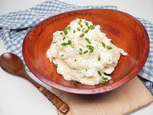

Mashed Potatoes

Description
They're mashed potatoes, not sure what else can be said.
Ingredients
- 3 large russet potatoes,
peeled and cut in half lenthwise
- 1/4 cup butter
- 1/2 cup whole milk
- salt and pepper to taste
Directions
- Place the potatoes into a large pot, and cover with salted water. Bring to a boil,
reduce heat to medium-low, cover, and simmer
until tender, 20 to 25 minutes.
Drain, and return the potatoes to the pot. Turn heat to high, and allow the potatoes
to dry for
about 30 seconds. Turn off the heat.
- Mash the potatoes with a potato masher twice around the pot, then add the butter and
milk. Continue to mash until smooth and fluffy.
Whisk in the salt and black pepper
until evenly distributed, about 15 seconds.
Return to Main Page